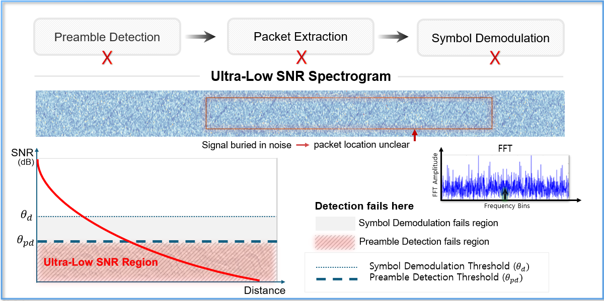
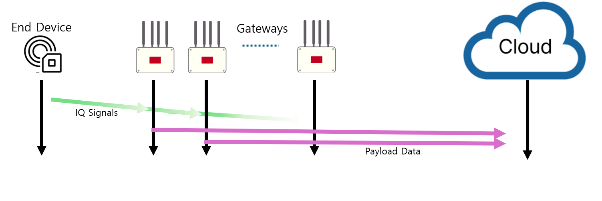
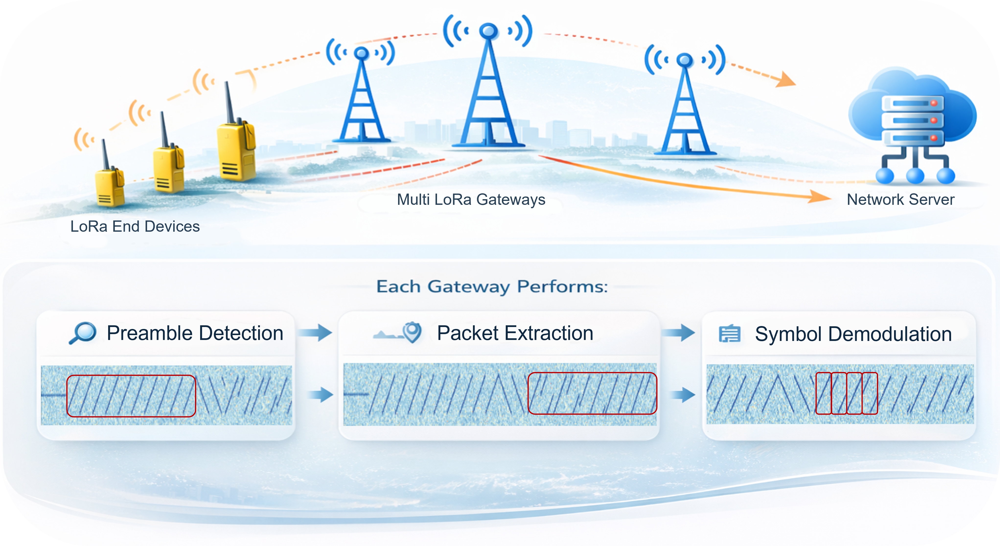

Abstract & Research Objectives
While Low-Power Wide-Area Networks (LPWANs) utilizing LoRa theoretically achieve over 10 miles of communication range, real-world deployments in complex urban and campus environments suffer from severe blockage attenuation. This attenuation drops the Signal-to-Noise Ratio (SNR) into the Ultra-Low SNR regime, causing conventional receiver demodulators to completely fail.
Recent neural approaches (e.g., NELoRa, GloriPhy, CaLoRa) have demonstrated notable SNR gains either in symbol classification or preamble detection in isolation. However, a major research gap remains: no prior work addresses the full end-to-end LoRa receiver pipeline under Ultra-Low SNR while simultaneously handling real-world hardware-induced impairments—specifically Carrier Frequency Offset (CFO), Symbol Timing Offset (STO), and Sampling Frequency Offset (SFO).
The primary purpose of this study is to design and evaluate a machine learning-based synchronization scheme for LoRa signal reception, specifically tailored for operation in ultra-low SNR environments without neglecting hardware-induced frequency and timing offsets.
Low-Power Wide-Area Networks (LPWAN) seperti LoRa menyumbang lebih dari 30% pangsa pasar global dengan jutaan gateway dan ratusan juta sensor. Namun di kondisi lapangan (perkotaan dan area kampus), jarak komunikasi sebenarnya jauh di bawah ekspektasi teoritis akibat pelemahan redaman gedung (blockage attenuation) yang menjatuhkan Signal-to-Noise Ratio (SNR) secara signifikan.
Metode konvensional (dechirping) gagal total di bawah batas sensitivitas Semtech. Meskipun penelitian terkini memanfaatkan machine learning untuk denoiser atau klasifikasi simbol, belum ada penelitian yang meneliti arsitektur sinkronisasi dan estimasi offset (CFO, STO, SFO) secara lengkap dalam pipeline penerima LoRa pada Ultra-Low SNR. Tesis ini memadukan arsitektur Cloud Radio Access Network (C-RAN) dan machine learning untuk menjembatani celah tersebut.
LoRa는 저전력 광역 통신(LPWAN)의 핵심 기술이지만, 도심 및 캠퍼스 등 실제 환경에서는 장애물에 의한 신호 감쇄로 인해 Signal-to-Noise Ratio(SNR)가 급격히 저하되는 초저(Ultra-Low) SNR 문제에 직면합니다.
기존의 전통적인 수신기 기법(디처핑 및 상관 연산)은 감도 임계치 이하에서 패킷 검출과 복조에 실패합니다. 최근 딥러닝 기반 연구들이 제안되었으나, 하드웨어 오차(주파수 오프셋 CFO, 심볼 타이밍 오프셋 STO, 샘플링 오프셋 SFO)를 종합적으로 고려한 전체 수신기 파이프라인 동기화 연구는 부재한 실정입니다. 본 연구는 C-RAN 및 머신러닝 기반 신호 복원 및 오프셋 보정 아키텍처를 설계하고 평가합니다.
🎯 Objective 1: Adapt & Integrate ML
Adapt and integrate deep learning techniques into conventional LoRa synchronization pipelines, replacing or augmenting traditional cross-correlation estimators that collapse under ultra-low SNR.
📈 Objective 2: Comprehensive Evaluation
Evaluate the performance enhancement in terms of Symbol Decoding Success Rate, Packet Reception Rate (PRR), and offset tolerance compared to conventional software-defined radio architectures.
The Ultra-Low SNR Challenge
Signal-to-Noise Ratio (SNR) in LoRa systems represents the power ratio between the transmitted CSS chirp signal and the background noise floor. Expressed logarithmically in decibels:
When noise power is 10 times higher than signal power, the SNR is -10 dB. As shown in the table below, Semtech specifies the nominal physical layer sensitivity limits per Spreading Factor (SF). Any signal received below these limits enters the Ultra-Low SNR region, where conventional hardware dechirpers completely lose the signal.
| Spreading Factor (SF) | Semtech Demodulation Limit | Nominal Time on Air | Typical Range | Ultra-Low SNR Regime (Failure Zone) |
|---|---|---|---|---|
| SF 7 | -7.5 dB | 61 ms | ~2 km | < -7.5 dB |
| SF 8 | -10.0 dB | 103 ms | ~4 km | < -10.0 dB |
| SF 9 | -12.5 dB | 185 ms | ~6 km | < -12.5 dB |
| SF 10 | -15.0 dB | 371 ms | ~8 km | < -15.0 dB |
| SF 11 | -17.5 dB | 741 ms | ~10 km | < -17.5 dB |
| SF 12 | -20.0 dB | 1482 ms | ~12-15 km | < -20.0 dB |

Figure: Ultra-Low SNR Region Definition. When path loss and blockage attenuation push signal levels below Semtech's physical demodulation thresholds, conventional correlation peaks are submerged beneath random AWGN fluctuations, leading to total synchronization and packet loss.
Interactive LoRa Chirp & Noise Synthesizer
Experience what happens to a LoRa Chirp Spread Spectrum (CSS) symbol as Signal-to-Noise Ratio drops into the Ultra-Low SNR zone. Adjust the slider to see the instantaneous frequency ramp dissolve beneath Gaussian noise:
LoRaWAN in General & C-RAN Architecture
LoRa operates at the physical layer via Chirp Spread Spectrum modulation, while LoRaWAN manages the MAC protocol layer. Standard commercially available LoRaWAN systems deploy a three-tier star-of-stars topology:
1. Edge Devices (Transmitters)
Battery-powered end nodes and sensors that collect environmental physical parameters, modulate them into CSS RF chirps, and broadcast them asynchronously on unlicensed ISM bands.
2. Gateways (RF Forwarders)
Multi-channel RF frontends listening continuously on ISM channels. In modern Cloud Radio Access Network (C-RAN) setups, gateways act as transparent forwarders streaming raw or compressed in-phase and quadrature (IQ) samples.
3. Network Server (Central Brain)
Centralized infrastructure performing deduplication, coherent signal combining, neural synchronization, and payload parsing before forwarding validated telemetry to application servers.

Figure 1: Data flow diagram of IQ signals and payload data in LoRaWAN system. Illustrating the reception flow from Edge Device transmission across multiple distributed Gateways, delivering digitized IQ streams over IP backhaul into the centralized Network Server for coherent combining and ML processing.
Comparison of Wireless Communication Technologies
| Parameter | LoRa / LoRaWAN | Bluetooth (BLE) | Cellular (4G/5G/NB-IoT) |
|---|---|---|---|
| Communication Range | Long (2 to 15 km) | Short (10 to 100 m) | Long (0.8 to 16 km) |
| Data Transmission Speed | Very Low (0.3 to 50 kbps) | Medium (1 to 2 Mbps) | High (Megabits to Gigabits) |
| Power Consumption | Ultra-low (Years on coin cell) | Very Low | High (Demands battery recharge) |
| Primary Use Cases | Off-grid wide-area sensors, smart city, agriculture | Wearables, phone-to-device peripherals | Streaming, video feeds, automotive tracking |
| Operating Frequency Bands | Unlicensed ISM (433, 868, 915 MHz) | 2.4 GHz ISM | Licensed spectrum (600 MHz to 39 GHz) |
The Complete LoRa Receiver Pipeline
Receiving an incoming LoRa packet is a multi-stage sequential process. A failure at any earlier stage causes complete packet loss down the line:

Figure 2: The Master LoRa Digital Receiver Pipeline. Covering the three fundamental stages: Preamble Detection (signal sensing amidst channel noise), Synchronization (estimating and decoupling CFO, STO, and SFO), and Symbol Demodulation (dechirping, FFT energy concentration, and payload decoding).
Preamble Detection
Because gateways listen 24/7 on empty spectrum, the receiver must distinguish pure noise from incoming signals. A standard preamble consists of 8 consecutive unmodulated base upchirps (S = 0), two network synchronization chirps, and 2.25 downchirps.
Synchronization
Statistically, over 99% of sample windows are misaligned upon arrival. The receiver must determine the exact starting boundary of symbols (STO) while simultaneously decoupling Carrier Frequency Offset (CFO) and Sampling Frequency Offset (SFO).
Symbol Demodulation
In-phase and quadrature samples are multiplied by a reference base downchirp (complex conjugate of upchirp). This collapses the continuous frequency sweep into a single instantaneous peak on the Discrete Fourier Transform (DFT), identifying the transmitted symbol S ∈ [0, 2SF − 1].
Hardware-Induced Frequency & Timing Offsets
In ideal theoretical models, transmitters and receivers share identical oscillators and sampling clocks. In commercial off-the-shelf hardware, three critical impairments must be corrected:
Definition: Time difference between actual symbol arrival and the receiver's sampling window starting index.
Impact: Causes a circular time shift during dechirping, manifesting directly as a shifted FFT peak index and yielding wrong decoded symbols.
Definition: Oscillator imperfection between transmitter and receiver RF local synthesizers.
Example: For a 5 PPM crystal at 915 MHz, Δf = 915 × 106 × 5 × 10−6 = 4,575 Hz. This shifts the frequency sweep vertically.
Definition: Discrepancy between ADC sampling clocks on transceiver and receiver chips.
Impact: Phase errors accumulate progressively over time. While negligible during short preambles, SFO severely degrades longer payload frames.
Because both STO and CFO shift the dechirped FFT peak, conventional receivers rely on conjugate symmetry between upchirps and downchirps to decouple the two offsets:
However, under Ultra-Low SNR, the downchirp correlation peaks are completely submerged by noise, causing conventional algebraic decoupling to collapse without neural assistance.
State-of-the-Art Machine Learning Benchmark
A systematic comparison of recent breakthroughs in deep learning-enhanced LoRa physical layers and where this thesis contributes:
Pioneered machine learning for LoRa demodulation. Uses a 2-stage model: deep learning spectrogram masking to restore chirp visibility, followed by a CNN spectrogram-based symbol classifier.
- Gains: +1.84 to 2.35 dB SNR gain
- Battery: Up to 272% (~1.5 years) battery extension
- Limitation: Focuses only on symbol classification; ignores STO/CFO sync under noise
Introduced Transformer attention to capture global spectrogram context rather than purely local CNN features. Applies an AWGN denoising filter and converts spectrograms back into clean IQ data via Inverse STFT.
- Advantage: Preserves IQ phase and accounts for static phase offsets
- Demodulation: Retains standard dechirping on cleaned IQ stream
- Limitation: High computational cost; synchronization assumed ideal
Competitor to GloriPhy utilizing a UNet network with channel and spatial attention mechanisms. Focuses on noise suppression to preserve critical features across deeper network layers.
- Feature: Combines spatial and channel attention in UNet skip-connections
- Processing: Denoises spectrogram before standard inverse conversion
- Limitation: Does not resolve dynamic CFO or multi-path time drifts
Adopts a "Restore and Detect" paradigm using Chirp-Aware Self-Attention. Restores upchirps across 20-frame windows to compute detection confidence and pinpoint preamble arrival times under CFO.
- Focus: Robust preamble detection under extreme negative SNR
- Tested: Validated against carrier frequency offsets
- Limitation: Demodulation and full packet synchronization left for downstream
A comprehensive neural receiver pipeline that bridges the critical synchronization gap in Ultra-Low SNR environments:
Full-Pipeline Integration
Unifies preamble detection, neural synchronization, and symbol restoration within a centralized C-RAN architecture.
CFO, STO & SFO Decoupling
Leverages neural models to decouple hardware offsets even when downchirp peaks are submerged under severe AWGN noise.
C-RAN Coherent Combining
Combines multi-gateway IQ signals constructively while running high-complexity deep learning on cloud GPUs.
Research Methodology & C-RAN Deployment
The proposed methodology relies on an end-to-end signal processing and machine learning workflow:
1. Synthetic & Testbed Signal Generation
Simulating continuous baseband LoRa signals across Spreading Factors (SF7–SF12), bandwidths (125–500 kHz), and sweeping SNR from +10 dB down to -25 dB with calibrated AWGN, Rayleigh fading, and parameterized CFO (up to ±20 ppm) and STO window jitter.
2. Neural Synchronization Estimator
Designing a deep network that accepts raw I/Q samples or high-resolution STFT representations to predict fraction and integer timing offsets (ΔkSTO) and carrier frequency deviations (ΔfCFO) before dechirping.
3. C-RAN IQ Centralization & Compression
Implementing efficient IQ data streaming from distributed low-cost software-defined radio (SDR) gateways to the cloud server using entropy and quantization schemes based on Pribadi et al. (ICAICTA 2025).
4. Empirical Benchmarking
Benchmarking Packet Reception Rate (PRR), Symbol Error Rate (SER), and computational execution latency against Semtech conventional dechirping, NELoRa, and CaLoRa baselines under identical synthetic and SDR testbeds.
References & Bibliography
Full bibliographic citations referenced in the thesis, formatted in IEEE citation standard:
-
[1]
Y. Ren, G. Li, Y. Liu, Y. Dong, and Z. Cao, "Aeroecho: Towards agricultural low-power wide-area backscatter with aerial excitation source," in Proc. IEEE INFOCOM, 2025.
-
[2]
Y. Ren, A. Gamage, L. Liu, M. Li, S. Chen, Y. Dong, and Z. Cao, "Sateriot: High-performance ground-space networking for rural IoT," in Proc. ACM MobiCom, 2024.
-
[3]
Y. Ren, L. Liu, C. Li, Z. Cao, and S. Chen, "Is LoRaWAN really wide? Fine-grained LoRa link-level measurement in an urban environment," in Proc. IEEE ICNP, 2022.
-
[4]
Semtech Corporation, "LoRa by the Numbers," 2025. [Online]. Available: semtech.com/lora.
-
[5]
LoRa Alliance, "LoRaWAN Specification v1.1," 2025. [Online]. Available: lora-alliance.org.
-
[6]
A. Dongare, R. Narayanan, A. Gadre, A. Luong, A. Balanuta, S. Kumar, B. Iannucci, and A. Rowe, "Charm: Exploiting geographical diversity through coherent combining in low-power wide-area networks," in Proc. ACM/IEEE IPSN, 2018.
-
[7]
S. Demetri, M. Zúñiga, G. Picco, F. Kuipers, L. Bruzzone, and T. Telkamp, "Automated estimation of link quality for LoRa: A remote sensing approach," in Proc. ACM/IEEE IPSN, 2019.
-
[8]
S. Pribadi, D. Tanjung, D. Kim, and J. Kim, "Toward efficient LoRa CRAN deployments: IQ data compression and gateway collaboration," in Proc. Int. Conf. Advanced Informatics: Concepts, Theory and Applications (ICAICTA), 2025.
-
[9]
J. Du, Y. Ren, M. Zhang, Y. Liu, and Z. Cao, "NELoRa-Bench: A benchmark for neural-enhanced LoRa demodulation," arXiv preprint arXiv:2305.15842, 2023.
-
[10]
R. Ghanaatian, O. Afisiadis, M. Cotting, and A. Burg, "LoRa digital receiver analysis and implementation," arXiv preprint arXiv:1811.04146, 2019.
-
[11]
Semtech Corporation, "LoRa SX1261/2 Technical Documentation," 2025.
-
[12]
Semtech Corporation, "LoRa SX1276/77/78/79 Technical Documentation," 2026.
-
[13]
C. Bernier, F. Dehmas, and N. Deparis, "Low complexity LoRa frame synchronization for ultra-low power software-defined radios," IEEE Trans. Commun., vol. 68, no. 5, pp. 3140–3152, 2020.
-
[14]
Y. Kim, S. Byeon, D. Kim, M. Hasegawa, and J. Kim, "Chirp-aware self-attention for robust LoRa preamble detection under ultralow SNR," IEEE Internet of Things J., vol. 13, no. 9, pp. 19205–19218, 2026.